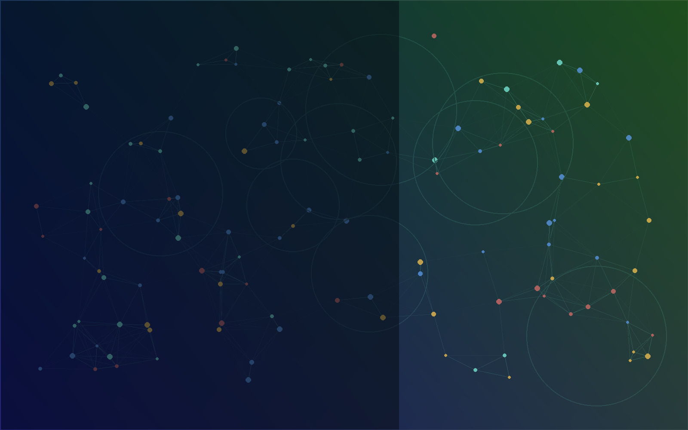

Bioinformatics
Protein structure prediction, molecular docking, binding affinity modeling, and computational biology workflows.

Ph.D. Researcher · Computer Science
Building AI systems for molecular dynamics, protein docking, multimodal vision, and applied data science.
Current Focus
I am a Ph.D. student at Kennesaw State University researching efficient, adaptive AI pipelines for molecular simulation, protein interaction modeling, and multimodal perception. My work connects deep learning, high-performance computing, and applied analytics with systems that can be deployed in practical research and industry settings.
Research
Protein structure prediction, molecular docking, binding affinity modeling, and computational biology workflows.
Self-adaptive simulation acceleration and AI-assisted pipelines that reduce compute cost while preserving scientific fidelity.
Multimodal vision systems for emotion recognition, gaze estimation, product detection, and edge deployment.
Retrieval-augmented generation, statistical modeling, machine learning systems, and analytics for decision support.
Selected Work
Introduces an adaptive AI framework reported to accelerate molecular dynamics simulations by 47x.
Deep learning pipeline for simulation automation and binding affinity prediction.
A practical fusion framework designed for clinical deployment scenarios.
Survey and analysis of AI techniques for protein structure prediction.
Provisional patent application with InComm Payments for edge-based multimodal vision systems.
Experience
Developing AccelMD and AI-driven protein-protein docking tools with emphasis on accuracy, speed, and physio-chemical properties.
Improving nonprofit IT infrastructure, data management, website intelligence, AI tooling, and secure information protocols.
Designing economical edge vision systems for customer behavior analysis, gaze estimation, product detection, and model compression.
Led actuarial analytics for forecasting, risk management, product pricing, rate charts, and business valuation.
Projects
Built a retrieval-augmented chatbot with LangChain, Neo4j, FastAPI, and Streamlit for context-aware responses over structured knowledge.
Developed a MultiTree all-reduce framework for efficient distributed learning, reducing communication complexity to O(log n).
Worked on emotion detection, gaze target estimation, hand interaction tracking, model compression, and edge deployment.
Toolkit
Contact